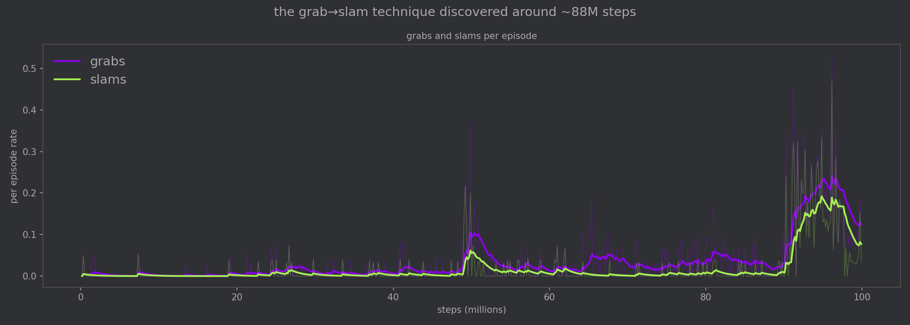
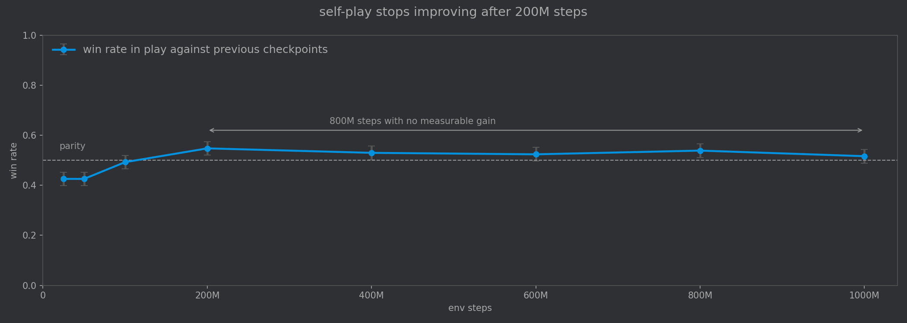
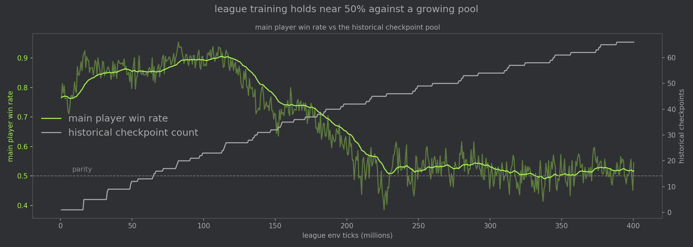

6 minutes
Teaching a Neural Net to Fight
In this project, I wanted to set up what I thought was a simple experiment: if we let a neural network play a fighting game, will it learn any interesting emergent behaviors? I would say the answer is a resounding “kind of”. The players will find “optimal” strategies, but whether we see those optimal strategies as interesting or simply as hacks is a bit of a matter of opinion.
Introducing Neural Knockout! Below, you can try your hand playing against the agent trained via opponent league.
Credit to Luiz Melo for game assets.
Technical background
Reinforcement learning is commonly used in tasks like games (and more recently, language modeling) where we want the model to take a long sequence of actions, and we want to label the entire sequence as good or bad. In a game, the action might be to take one step to the right. In language modeling, the action might be to emit a single token.
Unlike in regular supervised learning, in reinforcement learning we don’t know whether an individual action is good or bad. We will wait until the game ends or the writing sample is complete, and then score the entire sequence.
And what if the sequence never ends? Welcome to the wonderful world of the cold start problem.
Reward design
The simplest version of rewards in RL is to give +1 to the winning model and -1 to the losing model. In 2D fighting games like Streetfighter and Mortal Kombat the players start on opposite sides of the screen. To a human, it’s pretty obvious what to do next. But for an RL agent initialized with a random policy, going to the other side of the screen and actually attacking the opponent until you win is a small miracle.
🍿Click here to view
The problem above is actually two separate issues. First, the players don’t approach each other. They aren’t shy, they just don’t know any better. Second, even when they do, they don’t know to attack the opponent. They will jump or walk away and it will take a very long time to actually win or lose. And those two problems result in a third problem of credit assignment. It’s really hard to reward the useful actions if they’re buried in a pile of irrelevant ones.
To fix these problems, we can use reward shaping, which encourages the agents to take actions we’d like them to by being more precise about how we reward the model. To fix the distance issue, we can give a small reward for closing the distance with the opponent. To fix the pacifism issue, we can reward the models with opponent_damage - player_damage, so that giving the opponent damage increases the reward and taking damage reduces the reward.
Grabs
After adding those two reward shaping changes, the agents learned to approach and attack, throwing in a good amount of hopping and a bit of shielding as well. However, after watching a few of the games, one of the players seemed to learn that simply spamming attacks against the opponent’s shield was enough to win.
🍿Click here to view
It seemed like we needed to add a grab-slam mechanic to counter this: shield + attack = grab, which could punish attacks that hit an opponent’s shield. This rock-paper-scissors mix is commonly found in fighting games.
Grabbing was a slightly more complex mechanic for the model to learn since it requires landing a grab then pressing attack (to slam) to actually do any damage. I added a small reward for actually landing a grab in order to encourage more grabbing. After restarting the training, the model still took 88 million steps to learn to grab consistently.

Run 33: grab -> slam was discovered around 88M steps, receding as the opponent adapted.
🍿Click here to view
Hopping
Another interesting metagame appeared after a few training runs. The models found that being in the air avoided attacks entirely, and jump attacks were un-counterable.
This was a clear flaw in the game design, which I resolved by increasing landing lag and increasing the height of each grounded player’s hitbox so they can hit the airborne player. RL agents are good at discovering bugs like these.
🍿Click here to view
League play
Up until this point, I had been training the models using (asymmetric) self-play: both policies play a set of games against each other, then models are trained on the data from those games. One model’s loss is another model’s win, and the models learn to take actions to maximize their respective rewards.
However, self-play can lead the policies to learn brittle strategies. Rather than learning well-rounded play, the models will find that the most reliable way to get reward is to beat the particular opponent it is training against.

After pitting all checkpoints from run 38 against each other, we would expect that later checkpoints would outperform earlier ones since they received more compute. In reality, they plateau after ~200M steps. This suggests that rather than improving together, the two players were doing something more akin to a sophisticated dance, learning to counter the other's narrow gameplay style.
Rather than playing against a single, fixed opponent, pitting the Main policy against a pool of opponents should give it a more diverse experience. I created a league of opponents for Main composed of the following agent types (inspired by FightLadder):
- Opponent. The most recent snapshot of the model trained to play against Main, also trained against a pool.
- Exploiter. An agent trained against a frozen version of Main, specializing in beating Main (and only Main).
- League Exploiters. Trained against the pool of previous checkpoints.
- Historicals. Previous copies of Main, before it was improved.
Here we use Prioritized Fictitious Self-Play, meaning that Main will face opponents that it loses to more often (specifically, $ (1-w)^2 $, where $w$ is Main’s win rate against that opponent).
League training works. The model trained for 48M steps in the league won every matchup against previously-trained self-play-only checkpoints, despite never facing them. This also indicates that the strategies that those self-play agents discovered were independently discovered in the league to some respect.

Main’s win rate stays around 50% even as the historical pool grows to ~66 checkpoints.
🍿Click here to view
Practical note
Originally, I was copying game logic back and forth between Python training code and the HTML game viewing code. This is tedious and error-prone.
Instead, it is better to write the game engine once in Rust, then import it into the browser with wasm-pack and into the python training environment with maturin. Rust is also much faster than Python, so it’s easy to simulate billions of steps overnight if necessary.
See also: How to Create Rust Python Bindings
Applications
I believe this method, co-evolving a game with agents that learn to play it, can be used to find degenerate strategies in games during development. This kind of “reward hacking” means that agents will find the simplest way to receive a reward.
Therefore, training simple agents to play a game can be used to find bugs before sending a game to playtesters. If RL agents are able to break a game with silly strategies, it might be worth rebalancing before humans see it.